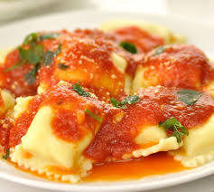
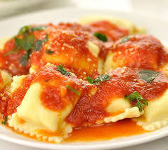

이탈리아 음식 문화의 특징
이탈리아는 서양의 음식을 대표하는 국가입니다. 이탈리아는 긴 반도국가로 위도에 따라 음식의 양상이 다릅니다. 북부의 경우 목축업이 발달해 낙농제품을 많이 생산됩니다. 이 때문에 낙농제품을 많이 생산하며 조리시 버터를 많이 사용합니다. 남부는 해산물이 많이 납니다. 조리시 올리브를 많이 사용합니다.
이탈리아 대표 음식
- 파스타 파스타는 이탈리아 국민들이 즐겨 먹는 음식입니다. 파스타는 나폴리의 빵이 원형이었습니다 빵을 눌러 불에 구운 후 길게 자른 '라가노(lagano)'라는 파스타가 최초로 등장하였습니다 건조 파스타에는 스파게티, 마카로니, 타리아텔레 등이 있으며 건조하지 않은 파스타는 라비올리, 도트델리니, 카넬로니 등이 있습니다. 스파게티 요리는 재료에 따라 다양한 방식으로 만들 수 있습니다. 미트 소스를 넣은 <볼로냐>, 토마토 소스를 넣은 <나폴리 스파게티> 달걀노른자와 치즈를 넣은 <까르보나라>, 모시조개를 넣은 <봉골레>, 마늘과 올리브오일을 넣은 <알리올리오> 등이 있습니다.
- 피자 피자는 나폴리의 서민음식에서 시작하여 현재는 가장 유명한 이탈리아 음식입니다 길게 자르지 않은 둥근 빵을 굽기 전 다른 음식물을 첨가하던게 피자가 되었습니다. 기본적으로 밀가루와 이스트를 이용해 반죽을 만듭니다. 토핑에 따라 다양한 종류의 피자가 존재합니다. 미국식 피자가 두껍고 토핑의 재료가 많은 반면 이탈리아 피자는 얇고 바삭한 빵 위에 간단한 재료를 올려 먹습니다.
- 리조또 이탈리아 북부 지역에서는 수프와 밥을 지을 때 쌀알의 길이가 긴 것을 사용합니다 쌀의 겉면이 단단하고 음식의 향을 잘 흡수한다는 특징이 있습니다 북부에서 다량으로 생산되는 버터와 쌀,육수를 붓고 저으면서 만들어 집니다 사람들은 기호에 맞게 해산물이나 다양한 버섯종류를 첨가합니다. 향신료와 치즈 가루를 리조또에 올리면 풍미를 즐길 수 있습니다.
| 남부 이탈리아 | 북부 이탈리아 |
|---|---|
| 스파게티 등의 건조 파스타 주로 이용 | 토텔리니 등의 생 파스타 주로 이용 |
| 올리브를 많이 쓰는 대신 버터를 별로 쓰지 않음 마늘과 토마토를 재료로 즐겨 씀 |
버터, 크림소스를 많이 써서 조리 |
| pasta 음식은 속을 채우지 않고 토마토 소스와 함께 제공 | 유명한 pasta요리로 속을 채운 rabioli가 있음 |
 
